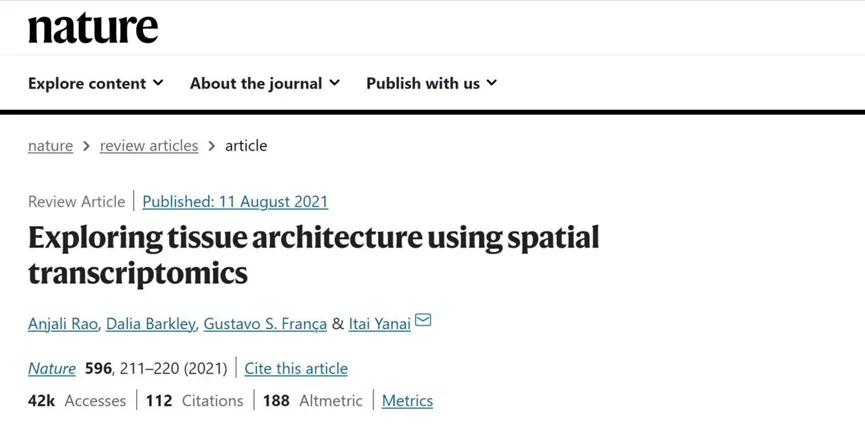
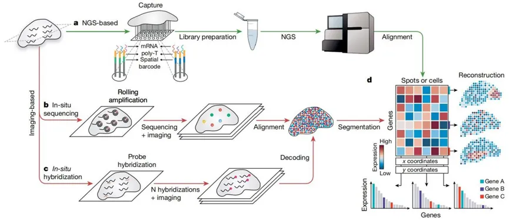
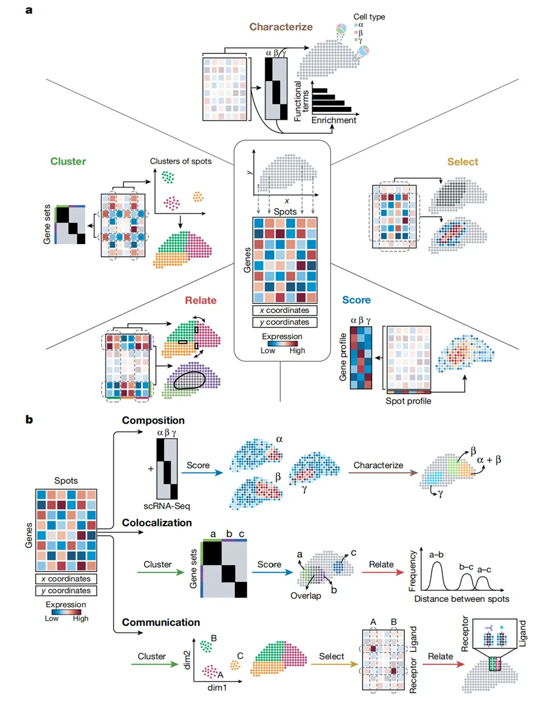
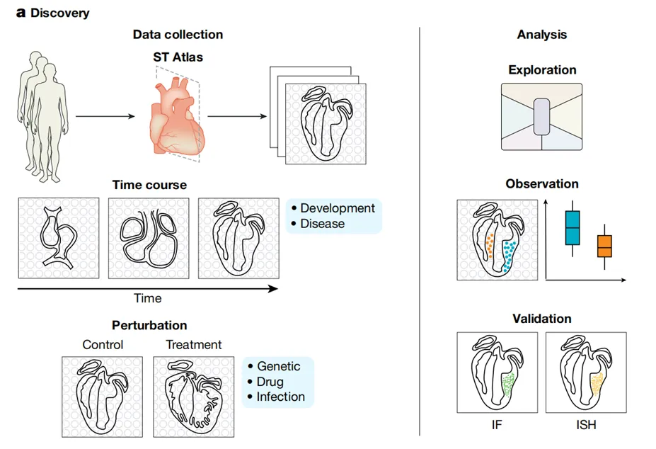
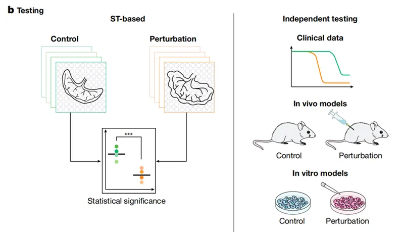

《Nature》经典综述：空间转录组学探索组织结构
原文：https://mp.weixin.qq.com/s?__biz=MzAwMzIzOTk5OQ==&mid=2247509228&idx=1&sn=0b7853dc07f86697b8e73fe47b83c499&chksm=9b3cddbcac4b54aa96f34acd40631de6938f491b69b1a15c4fc5f15e83d949d01a4b29399807#rd 合集：文献速递 / 粉丝来稿
写在前面
这是一篇发表于《nature》的文章，影响因子64.8。 作者回顾了空间转录组学技术，并描述了可用于结果数据分析路径的操作库，阐述了空间转录组学也可用于假设检验，使用比较时间点或条件(包括遗传或环境扰动)的实验设计。作者表明，空间转录组数据自然易于与其他数据模式整合，为深入了解组织组织提供了一个可扩展的框架。可以说是想要入门、了解空转的必读之作。

原文链接：https://doi.org/10.1038/s41586-021-03634-9 更多空转教程可见：空间转录组学习手册合辑Seurat空间转录组学习手册 Scanpy空间转录组学习手册 Stereopy空间转录组学习手册 Squidpy空间转录组学习手册一、综述背景及科学问题
在临床中，许多疾病的特征都是组织内的空间排列异常，例如感染和炎症过程都会极大地改变组织的细胞排列，组织病理学常常被用作结论性的疾病诊断工具。因此，破译多细胞生物中基因活动协调复杂细胞排列的原理和机制对生命科学的研究具有深远的影响。 包括原位杂交(ISH)和免疫组织化学在内的分子生物学方法通过绘制组织内的DNA、RNA和蛋白质，提供了更直接地可视化生物过程的能力。然而，这些方法将分析限制在一次最多几个基因或蛋白质。空间转录组学的出现深刻地改变了我们对细胞特征的描述能力，此方法可以测定细胞的全基因组、转录组或蛋白质组，这使新的细胞类型和细胞状态得以发现，并使人们对健康和疾病中的生物过程有了更详细的了解。基于下一代测序和成像方法的最新技术进展已经建立了空间转录组学的能力，可以系统地测量整个组织空间中所有或大多数基因的表达水平，该技术已被应用于神经科学、发育生物学和植物学中，以及调查一系列包括癌症在内的疾病的背景。本文回顾了常见的空间转录组技术，讨论了这些方法产生数据的原则，检查了空间转录组在不同实验设计中的效用，并强调了该技术通过与其他模式的集成来进行生物学观察的前景。
二、综述内容
●1、 空间转录组技术
空间转录组技术主要分为以下几类:(1)基于下一代测序(NGS)，在下一代测序之前将位置信息编码到转录本上;(2)基于成像的方法，包括基于原位测序(ISS)的方法(在组织中扩增转录本并进行测序)和基于ISH的方法(在组织中按顺序杂交成像探针)(图1a-c)。这种分类并不总是明确的，方法可能包含两类中的元素。这些不同的技术可以被视为汇聚在一个基因表达矩阵上(图1d)，该矩阵捕获每个点(即一个像素、一个细胞或一组细胞)的转录组。

图1
- （1）基于下一代测序(NGS)
在下一代测序之前将位置信息编码到转录上。基于NGS的方法建立在scRNA-seq方法的概念创新基础上，并取决于在准备文库之前添加的空间条形码。研究的核心创新是在逆转录前在空间条形码芯片上捕获多腺苷化RNA，确保每个转录本都可以使用独特的位置分子条形码映射到其原始位置。slide -seq是另一种基于NGS的技术，它使用随机的条形码小珠沉积在载玻片上以捕获mRNA，每个随机条码的位置是通过原位索引得到的。该方法获得了高分辨率(10 μm)和高灵敏度(每个珠500份转录本)。与此同时，高清空间转录组学(HDST)也提高了分辨率，通过将玻璃载玻片替换为沉积在孔中的珠片，类似于slide -seq。最近，用于空间组学测序的组织确定性条形码(DBiT-seq)已采用微流体技术将poly-T条形码应用于组织切片，而时空增强分辨率组学测序(Stereo-seq)使用以阵列模式沉积的随机条形码DNA纳米球来实现纳米级分辨率。Seq-scope已经实现了亚细胞分辨率的空间条形码，可用于可视化核和细胞质转录。在所有基于NGS的方法中，空间条形码RNA被收集和处理以进行测序。每个读取的条形码用于映射空间位置，而其余的测序读取被映射到基因组来识别原始转录本，共同产生一个基因表达矩阵 。
- （2）基于成像的方法
两种主要的基于成像的空间转录组学方法为ISS-和ISH方法。基于ISS的方法直接读取组织内的转录序列。具体来说，RNA经过逆转录、滚环扩增和测序(图1b)。利用反向转录的靶向探针，然后通过连接测序，该方法被用于研究癌症、结核病和脑发育中的大约50个靶向基因。在此基础上，转录扩增子读出图谱(STARMap)结合了水凝胶化学的进展、改进的探针和引物设计，并包括一种抗错误的连接测序方法，因此能够分析小鼠皮质中的数千个基因。基于ISH的方法是基于成像的第二类方法，建立在ISH技术的基础上，通过互补荧光探针杂交来检测目标序列(图1c)。最初，可识别的转录本数量有限，但最新的技术能够将连续杂交和成像与条形码相结合，实现了大量的多路复用。在多路抗错荧光ISH (MERFISH)中，连续几轮的杂交被成像以检测荧光标记探针的存在或不存在。基于ISS和ISH的两种成像方法，都对图像进行了处理，生成基因表达矩阵。为了获得单元级矩阵，需要对图像进行分割，可以在小区域上手工分割，也可以系统地使用计算方法分割。例如，流域算法使用DAPI染色的细胞核作为种子，并识别细胞边界为低RNA密度的区域。虽然这些可能不符合真正的物理边界，而是符合细胞之间的界限，但它们完成了将每个mRNA分配给一个细胞的任务。或者，数据分析可以从单个像素的水平上开始，并结合基因表达数据来描述细胞。选择空间转录组学方法需要注意:基因的吞吐量、序列信息、灵敏度、分辨率和面积大小等。
● 2、 通过空间转录组学深入了解发育、生理学和疾病
空间转录组技术提供的准确空间组成图已被用于生成组织图谱，这为参考图谱提供了宝贵的资源。使用空间转录组学生成神经系统的空间图谱尤其值得注意:基于空间转录组学的方法已经建立了整个小鼠大脑的详细地图或特定区域，如视觉皮质、初级运动皮质、颞中回、下丘脑视前区、海马和小脑。在发育生物学中，空间转录组学图谱有助于阐明心脏发育、精子发生和肠道发育的空间动力学。这些图谱一直是社会共同努力的重点，为研究界提供了有效的资源，并得到了人类细胞图谱项目和艾伦脑科学研究所的支持。除了正常的发育和生理学之外，空间转录组学还可以很好地研究疾病中的组织紊乱。最显著的是，空间转录组学能够识别在癌症中发挥作用的机制，例如，它能够识别正常的组织结构发生了改变。随着人们对肿瘤微环境重要性的认识，空间转录组学已被用于研究不同状态的肿瘤微环境与癌细胞的关系。特别是，空间转录组学使研究跨越癌症和正常组织边界的分子的特征成为可能。空间转录组学还为研究神经退行性疾病(包括阿尔茨海默病和肌萎缩性侧索硬化症)、感染和炎症过程(如麻风病、流感和败血症)以及类风湿关节炎和脊椎关节炎等风湿病的组织失调机制提供了参考。
● 3、 利用空间转录组数据集进行探索性数据分析
空间转录组学技术产生了一个基因表达矩阵，分析它既可以检验现有的假设，也可以通过探索性分析产生新的观察结果。在这种由John tukey倡导的探索性数据分析模式中，一个分析的结果指导下一个分析的选择，就像一个实验的结果指导下一个实验的设计一样。这并不是说先验知识和假设被忽略了，而是说它们被用来解释结果和指导分析。分析空间转录组数据通常需要排除低质量的数据，并对基因表达矩阵进行初始转换以提高信噪比，这可以使用诸如Giotto、Seurat、stutiliy和stLearn等分析包来完成。在一个点检测到的转录本总数提供了数据技术和生物属性的第一指示。每个点相对较低的转录本数量可能表明存在技术假象，例如某些区域的通透性不足，或者在基于NGS的方法中存在细胞密度差异。另外，生物变异，如细胞类型之间的转录活性差异或死亡或坏死细胞的存在，这种信号可能会混淆下游分析。平滑算法可以应用于数据，以提高灵敏度，并消除不必要的技术和生物变异来源。为了比较基因在不同位点上的表达，转录组通常通过除以转录本总数(每百万份转录本(TPM))或使用正则化负二项回归来标准化。类似地，通过将数据缩放到具有相同的平均值和方差(z-score)来辅助跨基因的比较。归一化的基因表达矩阵为在单个基因或点水平上的初始观察提供了基础(图1)。在数据中揭示结构（如细胞类型属性或连贯的基因模块）需要进一步处理矩阵。目前，我们将用于研究空间转录组数据的操作分为五类，即聚类，选择，评分，描述和联系 (图2a)。虽然对数据应用任何一种操作可能不会立即产生结果，但根据对每个阶段结果的解释，连续使用操作符可以生成一个结果的路径(图2b)。

图2● 4、 利用空间转录组生成假设并测试
健康或病变组织的空间转录组学图谱有助于正确的探索和假设生成。即使是那些用于研究特定生物过程的空间转录组数据集，如时间过程研究或扰动实验，也可以探索揭示意想不到的变化并制定新的假设（图3）。数千个斑点或基因可以一起进行研究，从而利用数据集的高维性来产生稳健的生物学推断。这些观察结果——一种细胞类型的存在，一种基因表达的模式或两种细胞状态的共定位——可能会导致一个新的可验证的假设。它们也应该被独立验证，例如，通过免疫荧光或ISH（图3a）。

图3（a）
另外，空间转录组数据可以被纳入经典的假设驱动的实验设计中，通过一个足够强大的实验来测试一个良好的预测。事实上，随着空间转录组学技术变得越来越容易获得，它将被用作常规分析，与流式细胞术或RNA测序一样。在实验设计的指导下，空间转录组学在扰动或时间过程实验中作为读数时，可以证实或证伪一个假设。每个样本都可以通过一个单独的数据点进行总结，以便在重复和条件下进行比较，因此需要收集足够数量的数据，以确保统计的严谨性和威力。研究可以纳入来自同一样本的几个部分的空间转录组学，以解释技术变异性，或每个条件下的多个生物复制。该假设可以在模型系统中、体外、体内或临床数据中得到进一步的验证（图3b）。

图3（b）● 5、 空间转录组与其他模式的整合
随着空间转录组学技术的分辨率和灵敏度的提高，与其他数据模式的整合可以为更好的组织表征提供机会。虽然目前往往未得到充分利用，但组织图像本身可以用来提取高分辨率的信息，特别是当结合组织病理学领域获得的大量知识后可以用来手动识别和注释区域；还有在组织中检测到的形态学特征（如细胞形状或细胞核大小）可以直接纳入分析。另一项研究通过融合高分辨率的组织图像数据，提高了空间转录组基因表达数据的分辨率。深度学习也被用于预测从基因表达和组织学预测的细胞类型注释，优于仅从任何一种方式预测的注释。随着转录组数据的增加，机器学习算法也被用于从组织病理学图像中预测基因表达。这些算法不依赖于预定义的形态学特征，而是通过将完整图像分解为“块”来提高其性能。将空间转录组学与这种机器学习方法相结合，可能会提高组织病理学的可解释性及其在临床决策中的应用。整合空间转录组数据集和高通量原位基因组成像以及组织中组蛋白标记的空间分布将是非常有价值的。最近，在完整组织内同时进行DNA测序对基因组组织进行空间定位已成为可能，这表明将空间基因组测序与原位转录组分析相结合的目标可能是可以实现的，这将加深我们对基因组组织和功能如何编码的理解。通过蛋白质共检测等互补的方式来增强基因表达数据，还可以阐明空间转录组学无法捕获的过程，如翻译后修饰和蛋白质的亚细胞定位及其在疾病中的失调。DBiT-seq可以使用来源于抗体的DNA标签对组织中的mRNA和蛋白质进行共定位，就像通过测序(CITE-seq)对转录组和表位进行细胞索引一样。用于蛋白质检测的高通量空间方法，如多路离子束成像(MIBI)，通过索引共同检测(CODEX)，组织循环免疫荧光(t-cyCIF)和自动质谱分析，提供了组织切片中蛋白质组的快照。技术进步使得这些高通量蛋白质组学方法与空间转录组学相结合，将大大提高我们研究组织复杂性的能力。
三、综述结论及展望
空间转录组学领域正在以指数级的速度增长，每天都有技术和数据集的发布。目前的空间转录组学方法所面临的挑战（包括分辨率和灵敏度的限制，以及通量和可及性）正在被迅速克服。空间转录组学方法正在与石蜡包埋组织兼容，为对生物收集的样本进行回顾性分析打开了大门。随着未来的创新，我们有可能系统地分析更大的组织区域，以重建三维器官或生物体水平的图谱，并可视化基因表达时转录组范围内的变化。除了克服这些技术挑战外，未来的工作还需要开发新的计算工具和创造性的分析思维。对空间转录组数据集的探索将使我们能够揭示指导组织水平空间组织建模的基本原则，并将有助于研究这些模式的机制。这些更深层次的生物学见解将把对简单组织的理解扩展到更复杂的结构，包括发育中的生物体和病变组织，使我们更接近征服空间前沿。更多空转教程可见：空间转录组学习手册合辑Seurat空间转录组学习手册 Scanpy空间转录组学习手册 Stereopy空间转录组学习手册 Squidpy空间转录组学习手册

如何联系我们

 公众号后台消息回复不便，这里给大家留一下领取资料及免费服务器(足够支持你完成硕博生涯的生信环境)的微信号 ，方便各位随时交流、提建议（科研任务繁重，回复不及时请见谅）。此外呼声一直很高的交流群 也建好了，欢迎大家入群讨论：
公众号后台消息回复不便，这里给大家留一下领取资料及免费服务器(足够支持你完成硕博生涯的生信环境)的微信号 ，方便各位随时交流、提建议（科研任务繁重，回复不及时请见谅）。此外呼声一直很高的交流群 也建好了，欢迎大家入群讨论：
大家可以阅读完这几篇之后添加给生信入门初学者的小贴士 如何搜索公众号过往发布内容

 您点的每个赞和在看，我都认真当成了喜欢
您点的每个赞和在看，我都认真当成了喜欢